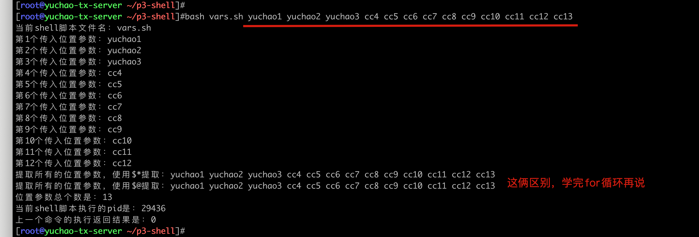
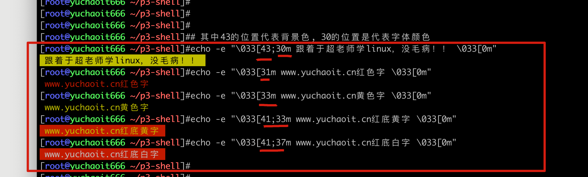
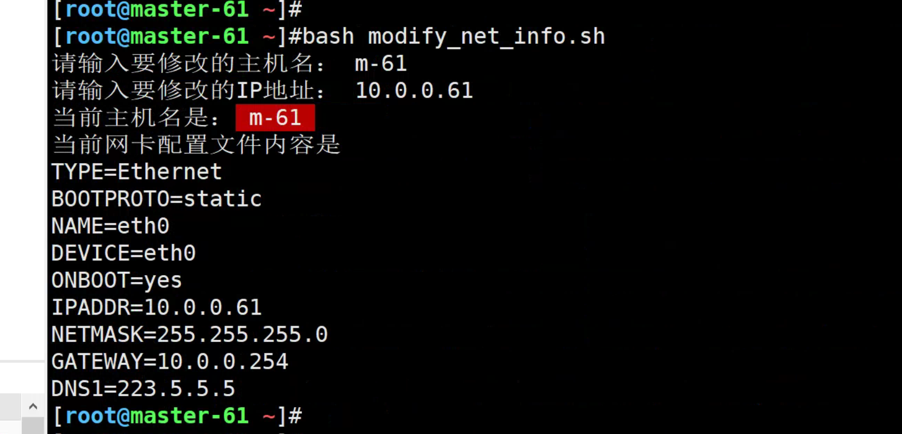
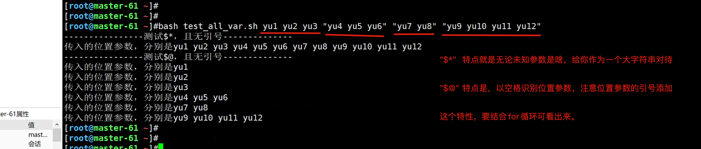
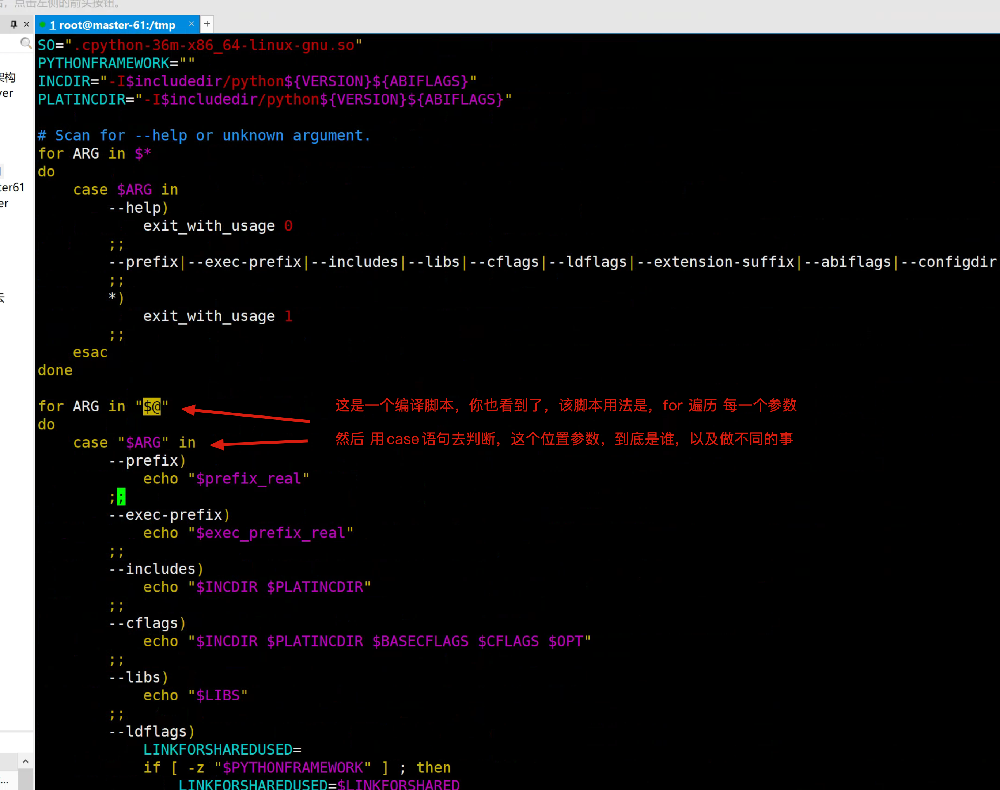
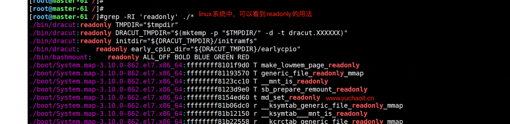
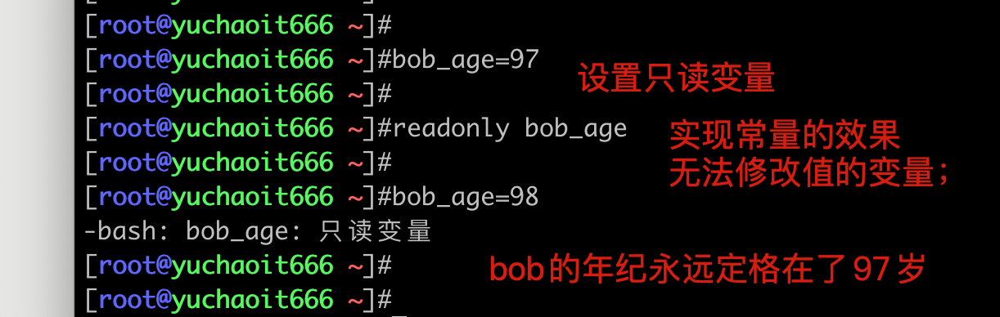
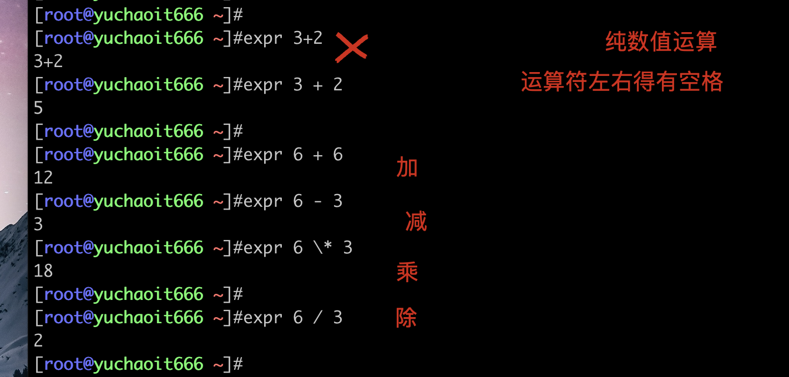

02-shell变量
1.什么是变量
变量、顾名思义
量就是记录事务的状态；
变就是事务的状态是会发生变化的；
变量本质是计算机中一种存、取数据的机制；
变量的数据都直接存储在内存中；
为什么要有变量？
程序的本质就是数据的不断变化，存取；
计算机程序的本质
程序=数据+算法（逻辑功能）
程序执行的本质就是一系列状态的变化，变是程序执行的直接体现;
所以我们需要有一种机制能够反映或者说是保存下来程序执行时状态以及状态的变化。
（例如一个变量，原本值是空字符串，接收用户输入的数据后，就存储了用户的数据）
# 比如：
王者荣耀初始的等级为1，打小兵升级后，等级变为了2,3,4
于超老师的名字在数据库里 叫做 "于超"，也可以改为"于大胆"
shell变量是什么
变量在每一种变量语言中都会用到；
shell也不例外，shell变量用于存、取数据，便于后续的反复使用。
2.变量分类
环境变量（全局变量） 系统中全局生效的变量；
普通变量（局部变量）只对局部环境，如当前某一个login.sh脚本生效；
变量生命周期
1. 永久变量，写入文件，反复读取，加载，让其永久生效，如/etc/profile的PATH修改；
2. 临时变量，如命令行export定义一个变量存储数据，关闭shell会话后失效；
2.1 是否添加export的变量
临时变量，是否添加export的区别
- 不加export，只对当前shell生效，子shell看不到；
- 加export，当前shell会话进程，父子shell都可以用；
临时变量，是否添加export的区别
1. 不加export，只对当前shell生效，子shell看不到；
[root@yuchao-tx-server ~]#pstree -p |grep ssh
|-sshd(13730)---sshd(9399)---bash(9406)-+-grep(9690)
[root@yuchao-tx-server ~]#
[root@yuchao-tx-server ~]#
[root@yuchao-tx-server ~]#
[root@yuchao-tx-server ~]#
[root@yuchao-tx-server ~]#
[root@yuchao-tx-server ~]#name='我是临时变量，于超老师你进入子shell就看不到我了，试试执行bash开启子shell'
------------------------------------------------------------------------------------------------------------------------
[root@yuchao-tx-server ~]#pstree -p |grep ssh
|-sshd(13730)---sshd(9399)---bash(9406)---bash(9804)-+-grep(9974)
[root@yuchao-tx-server ~]#echo $name
[root@yuchao-tx-server ~]#
[root@yuchao-tx-server ~]#export name2='我是export设置的全局变量，父子shell都可以看到，nb吗？'
[root@yuchao-tx-server ~]#
[root@yuchao-tx-server ~]#
[root@yuchao-tx-server ~]#bash
[root@yuchao-tx-server ~]#
[root@yuchao-tx-server ~]#pstree -p |grep ssh
|-sshd(13730)---sshd(9399)---bash(9406)---bash(9804)---bash(10085)-+-grep(10139)
[root@yuchao-tx-server ~]#
[root@yuchao-tx-server ~]#echo $name2
我是export设置的全局变量，父子shell都可以看到，nb吗？
2.2 加载环境变量文件的顺序
1. 登录ssh会话后，要加载/etc/profile
2. 执行用户家目录中的环境变量文件配置文件 ~/.bash_profile
3. 执行 ~/.bashrc
4. 执行/etc/bashrc
2.3 变量规范写法
变量由三大部分组成
1. 变量名，用于访问变量值的入口
2. 赋值符号，将内存中的数据，绑定到变量名
3. 变量值，具体的内存中数据
2.4 变量命名规范
定义变量的目的在于
1.存储数据，通过变量名提取
2.要不断的基于变量名，修改变量值，读取变量值。
# 变量名的命令应该见名知意，同时遵循如下规则
以字母或下划线开头，剩下的部分可以是：字母、数字、下划线，最好遵循下述规范：
1.以字母开头
2.使用下划线做单词的连接
3.同类型的用数字区分
4.对于文件名的命名最好在末尾加上拓展名
5.注意，变量名=变量值，等号两边没有空格；
6. 系统默认使用的变量，基本是完全大写的变量名；
例如: sql_bak.tar.gz,log_bak.tar.bz2
5、不要带有空格、？、*等特殊字符
6、不能使用bash中的关键字，例如if，for，while，do等，如定义ls="大傻春醒醒"
7、不要和系统环境变量冲突，如覆盖PATH，错误。
变量参考写法
纯字母：name
全小写：my_name
驼峰法：My_Name
全大写：MY_NAME
3.变量实际使用
3.1 字符串变量值
1. 先定义、再引用
[root@yuchao-tx-server ~]#my_website="http://www.yuchaoit.cn"
[root@yuchao-tx-server ~]#
[root@yuchao-tx-server ~]#
[root@yuchao-tx-server ~]#
[root@yuchao-tx-server ~]#echo $my_website
http://www.yuchaoit.cn
[root@yuchao-tx-server ~]#name="yuchao"
[root@yuchao-tx-server ~]#
[root@yuchao-tx-server ~]#
[root@yuchao-tx-server ~]#age="18"
[root@yuchao-tx-server ~]#
[root@yuchao-tx-server ~]#echo $name $age
yuchao 18
[root@yuchao-tx-server ~]#echo ${name} ${age}
yuchao 18
[root@yuchao-tx-server ~]#url="www.yuchaoit.cn"
[root@yuchao-tx-server ~]#echo $url
www.yuchaoit.cn
3.2 命令定义变量
用变量存储linux命令的执行结果。
变量名存储机器的ip
[root@yuchao-tx-server ~]#local_ip="$(ifconfig eth0 |awk 'NR==2{print $2}')"
[root@yuchao-tx-server ~]#
[root@yuchao-tx-server ~]#
[root@yuchao-tx-server ~]#echo $local_ip
10.141.32.137
变量名存储主机名
[root@yuchao-tx-server ~]#local_hostname=`hostname`
[root@yuchao-tx-server ~]#
[root@yuchao-tx-server ~]#
[root@yuchao-tx-server ~]#echo $local_hostname
yuchao-tx-server
[root@yuchao-tx-server ~]#Now_Time=$(date +%F)
[root@yuchao-tx-server ~]#
[root@yuchao-tx-server ~]#echo $Now_Time
2022-06-15
命令定义变量的两个方式
1. 反引号、$(命令执行) 都可以将结果赋值给变量
2. 建议用$()，否则太多引号，容易搞混；
3.3 提取变量值
需要注意如下写法的区别，以及坑。
使用$变量名，还是使用${变量名}的区别，看如下的坑
[root@yuchao-tx-server ~]#echo $name
yuchao
[root@yuchao-tx-server ~]#
[root@yuchao-tx-server ~]#
[root@yuchao-tx-server ~]#echo $name_666
[root@yuchao-tx-server ~]#
[root@yuchao-tx-server ~]#echo ${name}_666
yuchao_666
因此使用${变量}提取值，更为保险，定义了边界；
特殊情况，如设置百分比，建议这样用
[root@yuchao-tx-server ~]#progress="70"
[root@yuchao-tx-server ~]#
[root@yuchao-tx-server ~]#echo "当前进度是${progress}%"
当前进度是70%
单引号、双引号的坑
[root@yuchao-tx-server ~]#echo '我的名字是 ${name}'
我的名字是 ${name}
[root@yuchao-tx-server ~]#
[root@yuchao-tx-server ~]#
[root@yuchao-tx-server ~]#echo "我的名字是 ${name}"
我的名字是 yuchao
结论
1. 单引号，原样输出
2. 双引号、可以解析变量
什么情况下用这俩引号？
1. 你确认要提取变量的值，就双引号
2. 你确认必须要原样输出，是一个普通的字符串，或者显示特殊字符，就用单引号、或者反斜线 \ ，这个撬棍。
3.4 修改、删除变量
[root@yuchao-tx-server ~]#echo $name
yuchao
[root@yuchao-tx-server ~]#
[root@yuchao-tx-server ~]#name="吴彦祖"
[root@yuchao-tx-server ~]#
[root@yuchao-tx-server ~]#echo $name
吴彦祖
[root@yuchao-tx-server ~]#
[root@yuchao-tx-server ~]#unset name
[root@yuchao-tx-server ~]#
[root@yuchao-tx-server ~]#echo $name
[root@yuchao-tx-server ~]#
4.变量传递，参数传递（重要）
变量除了在命令行直接调用、存、取值。
还经常用在脚本传递的参数中，但是脚本接收的参数，这个特殊变量，是shell内置固定的语法规则。
# 执行脚本，获取传入的位置参数，如 ./vars.sh yuchao1 yuchao2 yuchao3 yuchao4 yuchao5
# 通过$n 获取第n个位置的参数值，从10开始，必须使用${n}不得简写
# shell变量的花式玩法
cat > vars.sh <<'EOF'
#!/usr/bin/env bash
echo "当前shell脚本文件名：$0"
echo "第1个传入位置参数：$1"
echo "第2个传入位置参数：$2"
echo "第3个传入位置参数：$3"
echo "第4个传入位置参数：$4"
echo "第5个传入位置参数：$5"
echo "第6个传入位置参数：$6"
echo "第7个传入位置参数：$7"
echo "第8个传入位置参数：$8"
echo "第9个传入位置参数：$9"
echo "第10个传入位置参数：${10}"
echo "第11个传入位置参数：${11}"
echo "第12个传入位置参数：${12}"
echo "提取所有的位置参数，使用\$*提取：$*"
echo "提取所有的位置参数，使用\$@提取：$@"
echo "位置参数总个数是：$#"
echo "当前shell脚本执行的pid是：$$"
echo "上一个命令的执行返回结果是：$?"
EOF
执行结果

使用场景？
例如启动脚本的 start|stop|restart
打开/etc/init.d/network 看看就知道了
4.1 实战开发
1.编写脚本，通过位置参数形式，免交互的创建linux用户与密码。
[root@yuchao-tx-server ~/p3-shell]#cat user.sh
#!/bin/bash
# 位置参数变量
username="${1}"
pwd="${2}"
# 创建用户
useradd ${username}
# 设置密码
echo ${pwd} | passwd --stdin ${username}
------------------------------------------------------------------------------------
执行
[root@yuchao-tx-server ~/p3-shell]#bash user.sh pyyu01 pyyu666
更改用户 pyyu01 的密码 。
passwd：所有的身份验证令牌已经成功更新。
登录测试
ssh pyyu01@ip
- 编写通过位置参数，自动修改主机名的脚本。
cat > set_hostname.sh <<'EOF'
#!/bin/bash
# 位置参数变量
hostname=${1}
# 设置主机名
hostnamectl set-hostname ${hostname}
# 检查当前主机名
echo "当前主机名：$(hostname)"
EOF
------------------------------------------------------------------------------------
执行
[root@yuchao-tx-server ~/p3-shell]#bash set_hostname.sh yuchaoit666
当前主机名：yuchaoit666
5. 交互式参数传递
利用read命令，接收用户输入，从键盘读取标准输入。
语法
read -p "提示信息" 变量名
5.1 用户信息接收
cat >read1.sh<<'EOF'
#!/bin/bash
# -s 不显示输入的内容，用于输入密码会用，保护密码
# -n 指定字符个数
# -t 输入超时时间
read -p "请输入账号：" username
read -s -t 20 -n 6 -p "请输入6为密码：" pwd
echo -e "\n================="
echo -e "\n账号是：${username}\n密码是：${pwd}"
EOF
------------------------------------------------------------------------------------
执行
[root@yuchaoit666 ~/p3-shell]#bash read1.sh
请输入账号：yuchao01
请输入6为密码：
=================
账号是：yuchao01
密码是：888888
5.2 备份目录小脚本
[root@yuchaoit666 ~/p3-shell]#cat backup_dir.sh
src_dir=/var/log/
# 让用户输入需要备份的目录
read -t 20 -p "请输入，你要备份的目的地：" backup_dir
echo "你输入的备份目录路径是：${backup_dir}，开始备份中"
mkdir -p ${backup_dir} && cp -ar ${src_dir} ${backup_dir}
echo -e "查看备份目录信息：\n$(ls ${backup_dir})"
[root@yuchaoit666 ~/p3-shell]#
[root@yuchaoit666 ~/p3-shell]#
[root@yuchaoit666 ~/p3-shell]#bash backup_dir.sh
请输入，你要备份的目的地：/tmp/back_log
你输入的备份目录路径是：/tmp/back_log，开始备份中
查看备份目录信息：
log
5.3 echo打印颜色（了解）
程序员也是有美感的，可以让你的程序显示更美观，echo命令的玩法。
# 其中43的位置代表背景色, 30的位置是代表字体颜色
echo -e "\033[43;30m 跟着于超老师学linux，没毛病！！ \033[0m"
echo -e "\033[31m www.yuchaoit.cn红色字 \033[0m"
echo -e "\033[33m www.yuchaoit.cn黄色字 \033[0m"
echo -e "\033[41;33m www.yuchaoit.cn红底黄字 \033[0m"
echo -e "\033[41;37m www.yuchaoit.cn红底白字 \033[0m"

颜色笔记
下面是相应的字和背景颜色，可以自己来尝试找出不同颜色搭配
例
echo -e "\033[31m 红色字 \033[0m"
echo -e "\033[33m 黄色字 \033[0m"
echo -e "\033[41;33m 红底黄字 \033[0m"
echo -e "\033[41;37m 红底白字 \033[0m"
字颜色：30—–37
echo -e "\033[30m 黑色字 \033[0m"
echo -e "\033[31m 红色字 \033[0m"
echo -e "\033[32m 绿色字 \033[0m"
echo -e "\033[33m 黄色字 \033[0m"
echo -e "\033[34m 蓝色字 \033[0m"
echo -e "\033[35m 紫色字 \033[0m"
echo -e "\033[36m 天蓝字 \033[0m"
echo -e "\033[37m 白色字 \033[0m"
字背景颜色范围：40—–47
echo -e "\033[40;37m 黑底白字 \033[0m"
echo -e "\033[41;37m 红底白字 \033[0m"
echo -e "\033[42;37m 绿底白字 \033[0m"
echo -e "\033[43;37m 黄底白字 \033[0m"
echo -e "\033[44;37m 蓝底白字 \033[0m"
echo -e "\033[45;37m 紫底白字 \033[0m"
echo -e "\033[46;37m 天蓝底白字 \033[0m"
echo -e "\033[47;30m 白底黑字 \033[0m"
最后面控制选项说明
\033[0m 关闭所有属性
\033[1m 设置高亮度
\033[4m 下划线
\033[5m 闪烁
\033[7m 反显
\033[8m 消隐
\033[30m — \33[37m
设置前景色
\033[40m — \33[47m 设置背景色
\033[nA 光标上移n行
\033[nB 光标下移n行
\033[nC 光标右移n行
\033[nD 光标左移n行
\033[y;xH设置光标位置
\033[2J 清屏
\033[K 清除从光标到行尾的内容
\33[s 保存光标位置
\033[u 恢复光标位置
\033[?25l 隐藏光标
\033[?25h 显示光标
5.4 用户输入综合小练习(实践)
脚本练习题，建议大家都先自己写，随便你用什么写法，只要完成结果。一百个人，写出100种风格也没问题。
需求
接收用户输入，创建用户，且将用户输入保存到文件/tmp/user_info.log，保存格式为username:pwd 键值对形式
# 分析如何做
1. 基础命令得熟练
2. 如何接受用户输入
3. 灵活使用变量
cat >user_info.sh<<'EOF'
# 接收输入，保存变量
read -p "please input your name：" username
read -p "please input user uid：" uid
read -p "please input your pwd：" pwd
# 使用变量，创建用户
useradd -u $uid $username
echo "$pwd" | passwd --stdin $username
echo "${username}:${pwd}" >> /tmp/user_info.glo
EOF
------------------------------------------------------------------------------------
执行
[root@yuchaoit666 ~/p3-shell]#bash user_info.sh
please input your name：yuchao02
please input user uid：11222
please input your pwd：666666
更改用户 yuchao02 的密码 。
passwd：所有的身份验证令牌已经成功更新。
[root@yuchaoit666 ~/p3-shell]#
[root@yuchaoit666 ~/p3-shell]#
[root@yuchaoit666 ~/p3-shell]#cat /tmp/user_info.glo
yuchao02:666666
# 优化改进就是，密码应该是不显示，来的更安全。
# 提示 -s参数
5.5 修改主机IP、主机名脚本(实践)
cat >modify_net_info.sh<<'EOF'
# 拿到需求之后，分析，思考如何，提取主机名，修改主机名，结合变量，用户输入的玩法
# 别忘记变量定义的规范
# 1.接收用户输入的信息
read -p "请输入要修改的主机名： " new_hostname
read -p "请输入要修改的IP地址： " new_ip
# 2.替换用户输入
hostnamectl set-hostname ${new_hostname}
sed -i "/IPADDR/c IPADDR=${new_ip}" /etc/sysconfig/network-scripts/ifcfg-eth0
# 3.检查修改
echo -e "当前主机名是：\033[41;37m $(hostname) \033[0m"
echo -e "当前网卡配置文件内容是\n$(cat /etc/sysconfig/network-scripts/ifcfg-eth0 )"
EOF

5.6 定时任务脚本
需求：通过交互式脚本，创建新的定时任务规则，要求
每十分钟和阿里云时间服务器同步。
# 思路
1. 先想好定时任务语句
2. 看要求，是交互式，还是非交互式
3. 如何写入定时任务规则
cat >create_crontab.sh <<'EOF'
#!/bin/bash
read -p "请输入crontab的时间频率：" cron_time
read -p "请输入crontab的具体命令：" cron_job
# 让用户输入生效
echo "#crontab by yuchao at $(date +%F)" >> /var/spool/cron/root
echo "$cron_time $cron_job" >> /var/spool/cron/root
echo -e "当前最新的计划任务是：\n$(crontab -l)"
EOF
------------------------------------------------------------------------------------
执行
[root@yuchaoit666 ~/p3-shell]#bash create_crontab.sh
请输入crontab的时间频率：*/5 * * *
请输入crontab的具体命令：ntpdate -u ntp.aliyun.com
当前最新的计划任务是：
#crontab by yuchao at 2022-06-15
*/5 * * * ntpdate -u ntp.aliyun.com
5.7 综合练习
要求：分别以交互式、非交互式两种开发脚本。
1. 创建3个用户，设置密码（限定11位密码，且隐藏显示），且记录到文件中/tmp/user_info.log，为如下格式
username:pwd
username:wpd
username:pwd
2. 编写修改主机名和IP的脚本，且立即生效
3. 编写设置定时任务的脚本，每五分钟和阿里云时间服务器同步，且不提示任何日志。
4. 写一个探测主机存活的脚本（提示用$?预定义变量）
6.预定义变量
刚才超哥演示了几个特殊变量，用于提取位置参数，这里再详细的看看用法，难点。
几个特殊的位置参数变量
$* 接收所有位置参数
$@ 接收所有位置参数
$# 参数个数
$$ 获取当前进程的PID
$? 上一个命令的返回值，0是正确，其他都错误（指的是你脚本上，查看$?的上一条命令）
6.1 测试预定义变量
cat >special_vars.sh <<'EOF'
echo "提取所有的位置参数，使用\$*提取：$*"
echo "提取所有的位置参数，使用\$@提取：$@"
echo "位置参数总个数是：$#"
echo "当前shell脚本执行的pid是：$$"
echo "上一个命令的执行返回结果是：$?"
EOF
------------------------------------------------------------------------------------
执行
[root@yuchaoit666 ~/p3-shell]#bash special_vars.sh bob01 jerry01 fake01
提取所有的位置参数，使用$*提取：bob01 jerry01 fake01
提取所有的位置参数，使用$@提取：bob01 jerry01 fake01
位置参数总个数是：3
当前shell脚本执行的pid是：22335
上一个命令的执行返回结果是：0
6.2 探测主机是否存活脚本
cat >is_alive.sh<<'EOF'
read -p "请输入需要探测的主机IP：" test_ip
ping -c 1 ${test_ip} &>/dev/null
if [ $? == 0 ];then
echo "该机器${test_ip}运行正常。。。"
else
echo "该机器${test_ip}已经挂了！！！"
fi
EOF
------------------------------------------------------------------------------------
执行
[root@master-61 ~]#bash is_alive.sh
请输入需要探测的主机IP：172.16.1.61
该机器172.16.1.61运行正常。。。
[root@master-61 ~]#bash is_alive.sh
请输入需要探测的主机IP：10.0.0.8
该机器10.0.0.8已经挂了！！！
[root@master-61 ~]#bash is_alive.sh
请输入需要探测的主机IP：10.0.0.61
该机器10.0.0.61运行正常。。。
6.3 获取所有位置参数(难点)
当我们想从脚本运行，传入的参数中获取具体的参数，可以用${n}
但是如果用户传入的参数不固定，你知道到底用 ${数字写多少合适?}
因此这时候，$* 和 $@ 的威力就来了，可以获取所有的位置参数（除了$0）
但是这俩变量虽说都是提取所有参数，但是提取之后的数据构造不一样，具体是什么，看于超老师给你演示一波。。
场景1，不加引号
1.当用户传入多个参数，都是以空格作为分隔符，获取每一个元素，此时$*和$@无区别。
2.注意此时，
$*和$@ 这俩特殊变量，都没添加引号
cat >test_all_var.sh <<'EOF'
echo "----------------测试\$*，且无引号--------------"
for v in $*
do
echo "传入的位置参数，分别是${v}"
done
echo "----------------测试\$@，且无引号--------------"
for v in $@
do
echo "传入的位置参数，分别是${v}"
done
EOF
执行结果
[root@master-61 ~]#bash test_all_var.sh yu1 yu2 yu3 yu4 yu5
----------------测试$*，且无引号--------------
传入的位置参数，分别是yu1
传入的位置参数，分别是yu2
传入的位置参数，分别是yu3
传入的位置参数，分别是yu4
传入的位置参数，分别是yu5
----------------测试$@，且无引号--------------
传入的位置参数，分别是yu1
传入的位置参数，分别是yu2
传入的位置参数，分别是yu3
传入的位置参数，分别是yu4
传入的位置参数，分别是yu5
[root@master-61 ~]#
场景2，加上引号
1.此时用户传入的参数，比较特殊了，存在空格
2.因此你给特殊变量，加上引号，含义就不一样了！！
[root@master-61 ~]#cat test_all_var.sh
echo "----------------测试\$*，且无引号--------------"
for v in "$*"
do
echo "传入的位置参数，分别是${v}"
done
echo "----------------测试\$@，且无引号--------------"
for v in "$@"
do
echo "传入的位置参数，分别是${v}"
done
执行结果
[root@master-61 ~]#bash test_all_var.sh yu1 yu2 yu3 yu4
----------------测试$*，且无引号--------------
传入的位置参数，分别是yu1 yu2 yu3 yu4
----------------测试$@，且无引号--------------
传入的位置参数，分别是yu1
传入的位置参数，分别是yu2
传入的位置参数，分别是yu3
传入的位置参数，分别是yu4
[root@master-61 ~]#
结论、你会发现
"$*" 添加了引号的变量是： 将位置参数作为了一个大字符串整体，单个的参数。
"$@" 添加了引号的变量是： 依然是以空格区分位置参数
但是，你确认你的想法正确吗？再来一个场景。。
场景3，位置参数比较特殊

[root@master-61 ~]#cat test_all_var.sh
echo "----------------测试\$*，且无引号--------------"
for v in "$*"
do
echo "传入的位置参数，分别是${v}"
done
echo "----------------测试\$@，且无引号--------------"
for v in "$@"
do
echo "传入的位置参数，分别是${v}"
done
总结
当你要将所有位置参数，多个参数，识别为一个整体，就用 "$*"
当你要单独的，提取为一个个参数，就用"$@" ，注意添加引号，否则没效果。
先记住语法，以后你会在高级脚本中，看到这个影子的。

7.常量（了解）
常量在shell中没有严格的语法支持，但是只有约定俗称的写法（全大写），以及通过命令强制性转为常量；
在其他数据类型更丰富的语言中，支持设定
普通变量，如name，age（如果age设置为常量，你理解下是什么意思，这种bug，常出现于初级开发的代码中。。）
常量，如月份，是固定的12个月，因此只能设定为无法修改的值，就是常量。
shell设置常量
通过readonly设置为常量。


8. 数据类型
8.1 什么是数据类型
数据就是指如变量的值，如web_site="www.yuchaoit.cn"， 后面这个引号里的，就是数据，值。
变量是用来反应、保持数据的状态，以及变化的，并且生活里，除了文字，还有整数，小数，等丰富的数据类型，需要我们通过计算机程序去表示。
8.2 shell语言
shell是一个解释型、弱类型、动态语言；
shell变量的数据类型，由解释器在运行shell时，决定是什么数据类型。
bash中变量默认都是字符串类型，虽说都是字符串类型，但是分为如下几个场景
- 数值
age=18
- 字符串
name=yuchao
- 数组
students=("张三" "李四" "于超")
- 列表
{1..10}
shell比较特殊，不像其他编程语言，有明确的数据类型，是什么就是什么。
也就是，虽说有这些类型的区分，但是shell都是当做字符串去存储。
如
name="yuchao"
age=18
这俩变量的值都被shell以字符串形式在内存中存储了，但是age的值是数字，它是可以计算的。
- 编译型、解释型
于超老师之前带着大家讲解，演示过
编译型的golang，需要go build
解释型的python，shell，需要用解释器执行代码
2.强类型、弱类型
强类型的golang，定义变量，以及数据类型，需要如下
var name string = "yuchao666"
----------------------------------------------------------------------------
弱类型的python，无须提前写好变量的类型
name = "yuchao666" # 注意有空格
----------------------------------------------------------------------------
弱类型的shell，无须提前写好变量的类型
name="yuchao666" # 注意无空格
----------------------------------------------------------------------------
因此强类型语言，定义变量，存储的数据，必须声明好它的类型，到底是string，还是int，还是floot
而弱类型的语言，数据类型是可以被忽略的，且修改变量的值之后，数据类型是可以随意切换的，没那么严格。
----------------------------------------------------------------------------
8.3 基本数据类型（shell中都以字符串对待）
数字
# int整型，存储如年龄、等级、身份证号、qq号、商品数量
age=10
level=3
qq_num=877348180
apple_count=9999999
----------------------------------------------------------------------------
# floot 浮点型，存储小数，如工资条，身高，体重
salary=8500.8
weight=175.53
----------------------------------------------------------------------------
数值类型变量支持的算术运算以及对应的算术运算符如下
加：+、+=、++
减：-、-=、--
乘：*、*=
除：/
取余 ：%、%=
----------------------------------------------------------------------------
数值类型变量用于条件测试时支持的比较运算以及对应的运算符如下
等于：-eq
不等于：-ne
小于等于：-le
大于等于：-ge
大于：-gt
小于：-lt
逻辑与：&&
逻辑非：!
逻辑或：||
----------------------------------------------------------------------------
数值类型变量用于for循环时支持的比较运算以及对应的运算符如下
等于：==
不等于：!=
小于等于：<=
大于等于：>=
大于：>
小于：<
逻辑与：&&
逻辑非：!
逻辑或：||
字符串
# shell中，加了引号的就是字符串，但是shell比较特殊，默认都以字符串存储数据，因此字符串你可以省去引号，除非存在特殊符号，如空格等，必须加引号，否则有歧义。
如
[root@yuchaoit666 ~]#name=yuchao
[root@yuchaoit666 ~]#
[root@yuchaoit666 ~]#name2="yuchao2"
[root@yuchaoit666 ~]#
[root@yuchaoit666 ~]#name3="yu chao"
[root@yuchaoit666 ~]#
[root@yuchaoit666 ~]#
[root@yuchaoit666 ~]#echo $name $name2 $name3
yuchao yuchao2 yu chao
----------------------------------------------------------------------------
# 结论
1. 不加引号的普通字符串，且是连续的字符（建议加引号，更规范）
2. 带有空格的，必须加引号
3. 单引号，双引号作用不一样。
----------------------------------------------------------------------------
单引号、双引号的区别
" " 弱引用，引号内加载特殊符号的作用
' ' 强引用，引号内的特殊字符全部取消意义
[root@yuchaoit666 ~]#name="yuchao"
[root@yuchaoit666 ~]#
[root@yuchaoit666 ~]#
[root@yuchaoit666 ~]#echo "${name} is 666"
yuchao is 666
[root@yuchaoit666 ~]#echo '${name} is 666'
${name} is 666
数组，作为难点，在后面讲。
9. 变量运算
9.1 变量运算语法
顾名思义，就是对变量计算数值计算，支持如下运算符。
数值类型变量支持的算术运算以及对应的算术运算符如下
加：+、+=、++
减：-、-=、--
乘：*、*=
除：/
取余 ：%、%=
9.2 支持shell变量运算的命令
expr # 只支持整数运算
$(( )) # 双括号运算，只支持整数运算，效率更高
$[] # 整数运算，语法简洁
bc # 支持整数，小数点运算
awk # 支持整数，小数点运算
% # 取余运算
前言
1.通过如下命令，能够理解变量值是支持数学运算的，以及一些语法上的学习。
2.不同命令，语法不一样，做好笔记，了解，看懂即可。
expr
纯数字计算

变量运算
[root@yuchaoit666 ~]#num1=6
[root@yuchaoit666 ~]#num2=2
# 加减乘除
[root@yuchaoit666 ~]#expr ${num1} + ${num2}
8
[root@yuchaoit666 ~]#expr ${num1} - ${num2}
4
[root@yuchaoit666 ~]#expr ${num1} \* ${num2}
12
[root@yuchaoit666 ~]#expr ${num1} / ${num2}
3
[root@yuchaoit666 ~]#
$(( ))
纯数值计算
[root@yuchaoit666 ~]#echo $(( 6+3))
9
[root@yuchaoit666 ~]#echo $(( 6-3))
3
[root@yuchaoit666 ~]#echo $(( 6*3))
18
[root@yuchaoit666 ~]#echo $(( 6/3))
2
[root@yuchaoit666 ~]#
[root@yuchaoit666 ~]#
[root@yuchaoit666 ~]#echo $(( 6/3+10*2))
22
变量计算
[root@yuchaoit666 ~]#num1=3
[root@yuchaoit666 ~]#num2=2
[root@yuchaoit666 ~]#
[root@yuchaoit666 ~]#echo $((num1+num2))
5
[root@yuchaoit666 ~]#echo $((num1-num2))
1
[root@yuchaoit666 ~]#echo $((num1*num2))
6
[root@yuchaoit666 ~]#echo $((num1/num2))
1
[root@yuchaoit666 ~]#echo $((num1*num2+3*2))
12
$[]
[root@yuchaoit666 ~]#num1=8
[root@yuchaoit666 ~]#num2=2
[root@yuchaoit666 ~]#
[root@yuchaoit666 ~]#
[root@yuchaoit666 ~]#echo $[num1+num2]
10
[root@yuchaoit666 ~]#echo $[num1-num2]
6
[root@yuchaoit666 ~]#echo $[num1*num2]
16
[root@yuchaoit666 ~]#echo $[num1/num2]
4
[root@yuchaoit666 ~]#
[root@yuchaoit666 ~]#
[root@yuchaoit666 ~]#echo $[num1/num2+3]
7
let
[root@yuchaoit666 ~]#let result=num1+num2
[root@yuchaoit666 ~]#
[root@yuchaoit666 ~]#
[root@yuchaoit666 ~]#echo $result
10
[root@yuchaoit666 ~]#let result=num1-num2
[root@yuchaoit666 ~]#
[root@yuchaoit666 ~]#echo $result
6
[root@yuchaoit666 ~]#let result=num1*num2
[root@yuchaoit666 ~]#
[root@yuchaoit666 ~]#
[root@yuchaoit666 ~]#echo $result
16
bc
[root@yuchaoit666 ~]#num1=10
[root@yuchaoit666 ~]#
[root@yuchaoit666 ~]#num2=2
[root@yuchaoit666 ~]#echo $num1+$num2 |bc
12
[root@yuchaoit666 ~]#echo $num1-$num2 |bc
8
[root@yuchaoit666 ~]#echo $num1*$num2 |bc
20
[root@yuchaoit666 ~]#echo $num1/$num2 |bc
5
awk运算
awk调用shell变量是双引号+单引号，双引号是保证正确处理变量值的空格。
awk支持小数处理。
[root@yuchaoit666 ~]#num1=10
[root@yuchaoit666 ~]#num2=3
[root@yuchaoit666 ~]#
[root@yuchaoit666 ~]#awk 'BEGIN{print "'$num1'" + "'$num2'" }'
13
[root@yuchaoit666 ~]#awk 'BEGIN{print "'$num1'" - "'$num2'" }'
7
[root@yuchaoit666 ~]#awk 'BEGIN{print "'$num1'" * "'$num2'" }'
30
[root@yuchaoit666 ~]#awk 'BEGIN{print "'$num1'" / "'$num2'" }'
3.33333
9.3 变量计算练习题（至少3个写法）
- 根据系统时间打印出，今天、明天的时间；至少3种写法
[root@yuchaoit666 ~]#echo "Today is $(date +%d) 号"
Today is 16 号
写法1 $(())
[root@yuchaoit666 ~]#echo "Tomorrow is $(($(date +%d)+1)) 号"
Tomorrow is 17 号
写法2 $[]
[root@yuchaoit666 ~]#echo "Tomorrow is $[$(date +%d)+1] 号"
Tomorrow is 17 号
写法3 expr
[root@yuchaoit666 ~]#echo "Tomorrow is $(expr $(date +%d) + 1 ) 号"
Tomorrow is 17 号
2.根据系统当前时间，今年还剩下多少个星期
[root@yuchaoit666 ~]#echo "今年已经过了 $(date +%j) 天"
今年已经过了 167 天
[root@yuchaoit666 ~]#
[root@yuchaoit666 ~]#
[root@yuchaoit666 ~]#echo "今年还剩下$(($(date +%j)/7)) 个星期 "
今年还剩下23 个星期
[root@yuchaoit666 ~]#echo "今年还剩下$[$(date +%j)/7] 个星期 "
今年还剩下23 个星期
[root@yuchaoit666 ~]#echo "今年还剩下$(expr $(date +%j) / 7) 个星期 "
今年还剩下23 个星期
3.写一个计算机程序
要求如下形式
请输入数值1：
请输入运算符：
请输入数值2：
计算结果是：
cat > calc.sh <<'EOF'
# 数据输入
read -p "请输入数值1：" num1
read -p "请输入运算符：" symbol
read -p "请输入数值2：" num2
# 结果计算
echo "计算结果是 $[ ${num1} ${symbol} ${num2} ]"
EOF
计算
[root@yuchaoit666 ~]#bash calc.sh
请输入数值1：10
请输入运算符：+
请输入数值2：2
计算结果是 12
[root@yuchaoit666 ~]#
[root@yuchaoit666 ~]#
[root@yuchaoit666 ~]#bash calc.sh
请输入数值1：10
请输入运算符：-
请输入数值2：2
计算结果是 8
[root@yuchaoit666 ~]#
[root@yuchaoit666 ~]#
[root@yuchaoit666 ~]#bash calc.sh
请输入数值1：10
请输入运算符：*
请输入数值2：2
计算结果是 20
[root@yuchaoit666 ~]#
[root@yuchaoit666 ~]#
[root@yuchaoit666 ~]#bash calc.sh
请输入数值1：10
请输入运算符：/
请输入数值2：2
计算结果是 5
10.今日作业
1. 你理解的shell脚本是什么，作用，使用场景有哪些；
2. shell脚本书写规范；
3. shell定义变量的方式；
4. shell如何引用变量；
5. shell脚本的预定义变量的含义（面试经常问，笔试题常见）
$0
$1
$2
$*
$@
$#
$$
$?
6. 变量的运算方式有哪些。
7. 今日课堂练习讲解动手练，做笔记；
练习题
8. 写脚本，提取当前机器的静态属性，包括如下，写入文件/tmp/server_info.log
系统版本
内核版本
主机名
eth0网卡ip
eth1网卡ip
当前主机的公网ip
内存使用率
磁盘使用率
CPU使用率
9.开发计算器脚本，支持加减乘除即可。看看谁的计算器更牛。
11.补充：变量子串
shell子串
子串就是一个完整字符串的一部分，通过shell特有语法截取。
${变量} 返回变量值
${#变量} 返回变量长度，字符长度
${变量:start} 返回变量Offset数值之后的字符
${变量:start:length} 提取offset之后的length限制的字符
${变量#word} 从变量开头删除最短匹配的word子串
${变量##word} 从变量开头，删除最长匹配的word
${变量%word} 从变量结尾删除最短的word
${变量%%word} 从变量结尾开始删除最长匹配的word
${变量/pattern/string} 用string代替第一个匹配的pattern
${变量//pattern/string} 用string代替所有的pattern
案例
子串基本用法
Shell 截取字符串通常有两种方式：从指定位置开始截取和从指定字符（子字符串）开始截取。
从指定位置开始截取
这种方式需要两个参数：除了指定起始位置，还需要截取长度，才能最终确定要截取的字符串。
既然需要指定起始位置，那么就涉及到计数方向的问题，到底是从字符串左边开始计数，还是从字符串右边开始计数。答案是 Shell 同时支持两种计数方式。
\1) 从字符串左边开始计数
如果想从字符串的左边开始计数，那么截取字符串的具体格式如下：
${string: start :length}
其中，string 是要截取的字符串，start 是起始位置（从左边开始，从 0 开始计数），length 是要截取的长度（省略的话表示直到字符串的末尾）。
[root@chaogelinux ~]# name="chao"
[root@chaogelinux ~]# echo ${name}
chao
[root@chaogelinux ~]# echo ${#name}
4
# 从start位置开始截取
[root@chaogelinux ~]# echo ${name:3}
o
[root@chaogelinux ~]# echo ${name:2}
ao
[root@chaogelinux ~]# echo ${name:1}
hao
# 指定start，以及元素长度
[root@chaogelinux ~]# echo ${name:1:2}
ha
计算变量值，长度的玩法
# 计算变量值，长度的玩法
[root@chaogelinux ~]# echo $name|wc -L #计算字符串长度
11
# 解释
# 打印行数
[root@chaogelinux shell_program]# cat test.txt |wc -l
2
# 打印最长行数的元素个数
[root@chaogelinux shell_program]# cat test.txt |wc -L
5
[root@chaogelinux ~]# expr length "$name" #expr的length函数计算长度
11
[root@chaogelinux ~]# echo "$name" | awk '{print length($0)}' #用awk的length函数
11
#最快的方式
[root@chaogelinux ~]# echo ${#name}
11
字符串长度计算，多种方法，谁最快？
速度比较
# 最快方式
# seq -s 指定分隔符
# seq -s ":" 100
# 执行3次打印的命令，打印出一个指定了分隔符的1～100的序列
for n in {1..3};do char=`seq -s ":" 100`;echo ${char} ;done
# 实践
[root@chaogelinux ~]# time for n in {1..10000};do char=`seq -s "chaoge" 100`;echo ${#char} &>/dev/null;done
real 0m11.041s
user 0m4.585s
sys 0m6.232s
#计算速度很慢，管道符和wc -L
[root@chaogelinux ~]# time for n in {1..10000};do char=`seq -s "chaoge" 100`;echo ${char}|wc -L &>/dev/null;done
real 0m38.577s
user 0m15.394s
sys 0m22.491s
# 性能还不错
[root@chaogelinux ~]# time for n in {1..10000};do char=`seq -s "chaoge" 100`;expr length "${char}" &>/dev/null;done
real 0m21.053s
user 0m8.673s
sys 0m11.944s
# awk再次加工，最慢
[root@chaogelinux ~]# time for n in {1..10000};do char=`seq -s "chaoge" 100`;echo ${char}|awk '{print length($0)}' &>/dev/null ;done
real 0m33.728s
user 0m13.839s
sys 0m19.121s
shell编程，尽量用内置系统操作，与内置函数
截取字符串
基本语法
# 从开头删除匹配最短
## 从开头删除匹配最长
% 从结尾删除匹配最短
%% 从结尾删除匹配最长
# 指定字符内容截取
a*c 匹配开头为a，中间任意个字符，结尾为c的字符串
a*C 匹配开头为a，中间任意个字符，结尾为C的字符串
#语法
name="yuchao" # 该变量的值，有索引，分别是从 0，1，2，3，4开始
${变量} 返回变量值
${#name} 返回变量长度，字符长度--------
${变量:start} 返回变量start数值之后的字符，且包含start的数字
${变量:start:length} 提取start之后的length限制的字符 ，例如${name:4:1}
${变量#word} 从变量开头删除最短匹配的word子串 ${name:yu}
${变量##word} 从变量开头，删除最长匹配的word
${变量%word} 从变量结尾删除最短的word
${变量%%word} 从变量结尾开始删除最长匹配的word
替换
${变量/pattern/string} 用string代替第一个匹配的pattern
${变量//pattern/string} 用string代替所有的pattern
删除匹配的内容
[root@chaogelinux ~]# echo ${name}
I am chaoge
[root@chaogelinux ~]# echo ${name:2:2} #第二个开始，取2个
am
[root@chaogelinux ~]# name2=abcABC123ABCabc
[root@chaogelinux ~]#
[root@chaogelinux ~]
[root@chaogelinux ~]#
# 从开头删除
[root@chaogelinux ~]# echo ${name2#a*C} #从开头删除最短的a*C
123ABCabc
[root@chaogelinux ~]# echo ${name2##a*C} #从开头删除最长的匹配
abc
# 从结尾删除
# 从结尾没有匹配到结果，原样返回
[root@chaogelinux ~]# echo ${name2%a*C}
abcABC123ABCabc
# 匹配到了就删除
[root@chaogelinux ~]# echo ${name2%a*c}
abcABC123ABC
# 匹配长的删除
# 删干净了，因为变量值name2=abcABC123ABCabc，匹配a*c，取最长的也就从前删到结尾
[root@chaogelinux ~]# echo ${name2%%a*c}
# 原样返回，因为从结尾开始匹配，压根就找不到a*C，因此不做处理
[root@chaogelinux ~]# echo ${name2%%a*C}
abcABC123ABCabc
替换字符串
[root@chaogelinux ~]# str1="Hello,man,i am your brother."
[root@chaogelinux ~]#
[root@chaogelinux ~]#
[root@chaogelinux ~]#
[root@chaogelinux ~]# echo $str1
Hello,man,i am your brother.
[root@chaogelinux ~]#
[root@chaogelinux ~]#
# 一个/ 替换匹配第一个合适的字符串
[root@chaogelinux ~]# echo ${str1/brother/sister}
Hello,man,i am your sister.
# 两个//，匹配所有的合适的字符串
# 替换所有的o为大写O
[root@chaogelinux ~]# echo ${str1//o/O}
HellO,man,i am yOur brOther.
删除文件名练习
删除所有图片文件名中的子串
[root@chaogelinux ~]# touch stu_102999_{1..5}_finished.jpg
[root@chaogelinux ~]# touch stu_102999_{1..5}_finished.png
[root@chaogelinux ~]# ll *.jpg *.png
-rw-r--r-- 1 root root 0 5月 26 18:05 stu_102999_1_finished.jpg
-rw-r--r-- 1 root root 0 5月 26 18:07 stu_102999_1_finished.png
-rw-r--r-- 1 root root 0 5月 26 18:05 stu_102999_2_finished.jpg
-rw-r--r-- 1 root root 0 5月 26 18:07 stu_102999_2_finished.png
-rw-r--r-- 1 root root 0 5月 26 18:05 stu_102999_3_finished.jpg
-rw-r--r-- 1 root root 0 5月 26 18:07 stu_102999_3_finished.png
-rw-r--r-- 1 root root 0 5月 26 18:05 stu_102999_4_finished.jpg
-rw-r--r-- 1 root root 0 5月 26 18:07 stu_102999_4_finished.png
-rw-r--r-- 1 root root 0 5月 26 18:05 stu_102999_5_finished.jpg
-rw-r--r-- 1 root root 0 5月 26 18:07 stu_102999_5_finished.png
1.去掉所有_finished字符串
思路：
1.单个文件去掉后缀，很简单
[root@chaogelinux str1]# mv stu_102999_1_finished.jpg stu_102999_1.jpg
2.通过子串的替换方式
[root@chaogelinux str1]# f=stu_102999_1_finished.jpg
[root@chaogelinux str1]#
[root@chaogelinux str1]#
# 变量的子串功能，去掉后缀
[root@chaogelinux str1]# echo ${f//_finished/}
stu_102999_1.jpg
# 利用变量的反引用替换文件名
[root@chaogelinux str1]# mv $f `echo ${f//_finished/}`
# 剩下的文件，利用循环操作
# 找出剩下所有需要替换的jpg文件
[root@chaogelinux str1]# ls *fin*.jpg
stu_102999_2_finished.jpg stu_102999_3_finished.jpg stu_102999_4_finished.jpg stu_102999_5_finished.jpg
[root@chaogelinux str1]#
# 写shell循环代码，循环操作
# 去掉所有jpg文件的_finished后缀
[root@chaogelinux str1]# for file in `ls *fin*.jpg`;do mv $file `echo ${file//_finished/}`;done
[root@chaogelinux str1]# ls *.jpg
stu_102999_1.jpg stu_102999_2.jpg stu_102999_3.jpg stu_102999_4.jpg stu_102999_5.jpg
[root@chaogelinux str1]#
特殊shell扩展变量处理
语法
parameter，参数，范围
如果parameter变量值为空，返回word字符串
${parameter:-word}
如果para变量为空，则word替代变量值，且返回其值
${parameter:=word}
如果para变量为空，word当作stderr输出，否则输出变量值
用于设置变量为空导致错误时，返回的错误信息
${parameter:?word}
如果para变量为空，什么都不做，否则word返回
${parameter:+word}
扩展变量实践
演示1
:-
[root@chaogelinux str1]# echo $chaoge
[root@chaogelinux str1]#
[root@chaogelinux str1]#
# 当chaoge没有值，heihei被返回，赋值给result
[root@chaogelinux str1]# result=${chaoge:-heihei}
[root@chaogelinux str1]#
[root@chaogelinux str1]# echo $result
heihei
# 要注意的是，此时chaoge还是空
[root@chaogelinux str1]# echo $chaoge
[root@chaogelinux str1]#
# 情况2，当chaoge变量有值时，该特殊扩展变量的符号，也就不起作用了
[root@chaogelinux str1]# echo $chaoge
pangzi
[root@chaogelinux str1]#
[root@chaogelinux str1]# result=${chaoge:-heihei}
[root@chaogelinux str1]# echo $result
pangzi
[root@chaogelinux str1]# echo $chaoge
pangzi
演示2
:=
该特殊情况用于保证变量始终有值
# 撤销变量
[root@chaogelinux str1]# echo $chaoge
[root@chaogelinux str1]# unset result
# 发现，hehe不但给了result，还给了chaoge变量
[root@chaogelinux str1]# result=${chaoge:=hehe}
[root@chaogelinux str1]# echo $result
hehe
[root@chaogelinux str1]# echo $chaoge
hehe
# 如果变量有值，什么事也不做
[root@chaogelinux str1]# result=${chaoge:apple}
[root@chaogelinux str1]# echo $result
hehe
[root@chaogelinux str1]# echo $chaoge
hehe
演示3
:?，当变量不存在时候，输出指定信息
[root@chaogelinux str1]# echo ${cc}
# 默认错误
[root@chaogelinux str1]# echo ${cc:?}
-bash: cc: 参数为空或未设置
[root@chaogelinux str1]# echo ${cc:?cc不存在}
-bash: cc: cc不存在
# 变量有值，则不做处理
[root@chaogelinux str1]# cc="happy"
[root@chaogelinux str1]# echo ${cc:?cc不存在}
happy
演示4
:+ 如果变量为空，什么都不做，否则替换
[root@chaogelinux str1]# unset cc result chaoge
# 为空
[root@chaogelinux ~]# result=${name:+chaoge}
[root@chaogelinux ~]# echo $result
[root@chaogelinux ~]# echo $name
[root@chaogelinux ~]#
# 不为空
[root@chaogelinux ~]# name="xiaoyu"
[root@chaogelinux ~]#
# 后面的值，返回给result
[root@chaogelinux ~]# result=${name:+chaoge}
[root@chaogelinux ~]# echo $result
chaoge
[root@chaogelinux ~]# echo $name
xiaoyu
扩展变量的应用场景
在脚本开发中，例如数据备份、删除的脚本
删除7天前的过期数据
[root@chaogelinux shell_program]# cat del_data.sh
find ${path:=/tmp} -name '*.tar.gz' -type f -mtime +7|xargs rm -f
# 上述就对path变量做了处理，否则如果path变量为定义，命令就会报错
# 有误的脚本，未指定path的路径，就会在当前目录删除，程序就有了歧义，bug
[root@chaogelinux shell_program]# cat del_data.sh
find ${path} -name '*.tar.gz' -type f -mtime +7|xargs rm -f
[root@chaogelinux shell_program]#